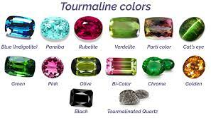

Tourmaline
Système cristalin : rhomboédrique
Indice de réfraction : 1,610 à 1,650
Birèfringence : uniaxe -0,015 à 0,028
Densité : 3,09
Dureté : 7,5
Couleur : incolore violet bleu vert jaune rose rouge orange brun noir
Image :
